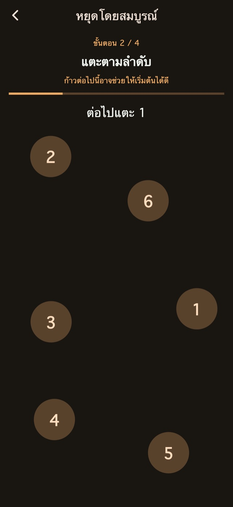
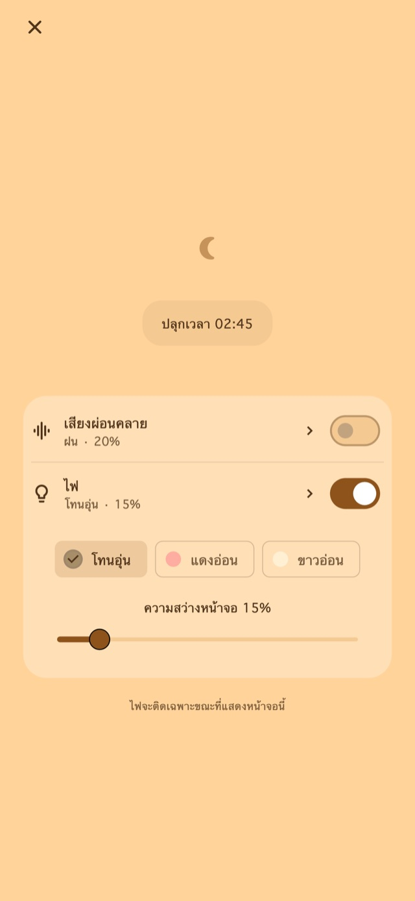

เสียงผ่อนคลาย
ฟังเสียงฝน คลื่น หรือไวต์นอยส์ เสียงจะเริ่มเมื่อคุณเปิดเองเท่านั้น และค่อย ๆ เบาลงจนหยุดเมื่อถึงการปลุกครั้งแรก
นาฬิกาปลุกแบบสั่นสำหรับงีบและลุกหลังกล่อมลูกนอน
สำหรับคนที่งีบแล้วหลับยาว หรือเผลอหลับไปตอนกล่อมลูก
01รูปแบบการสั่น
ความยาวและจังหวะการสั่นที่เปลี่ยนไปให้ความรู้สึกต่างจากการแจ้งเตือนทั่วไป ความรู้สึกที่ไม่คุ้นเคยนี้ออกแบบมาเพื่อช่วยให้สังเกตการปลุกและตื่นขึ้น
สั่นสั้น สั่นยาว และสั่นต่อเนื่อง เลือกได้ 4 โหมดพื้นฐาน: สุ่ม แบบแจ้งเตือน เน้นยาว หรือเน้นสั้น ระยะเวลาและช่วงพักที่เปลี่ยนไปทำให้จังหวะต่างกัน ลองสั่นก่อนตั้งปลุกได้
รูปแบบการสั่น
02เตือนหลายครั้ง
หยุดเฉพาะครั้งปัจจุบันเพื่อเก็บครั้งถัดไป หรือจบชุดเพื่อยกเลิกเวลาที่เหลือได้
การบันทึกจำนวนครั้งและช่วงห่างเป็นฟีเจอร์พรีเมียม
เตือนหลายครั้ง
จบชุดเมื่อลุกแล้ว
03ขั้นตอนหยุดปลุก
คำนวณ แตะตัวเลขตามลำดับ กดค้าง และแตะรัว เป็นขั้นตอนสำหรับหยุดหรือเลื่อนปลุก มีขั้นตอนมาตรฐานให้ใช้ ส่วนการแก้ไขและผสมขั้นตอนต้องใช้ Premium

หน้าจอกลางคืน
ปรับความสว่างและรูปแบบนาฬิกาได้ เลือกซ่อนภาพเมื่อไม่ได้ใช้งานสักพัก แล้วแตะเพื่อแสดงนาฬิกาและปุ่มควบคุมอีกครั้ง
เลือกระยะเวลา เช่น 30 นาที หรือเวลาที่อยากตื่น
เปิดหน้าจอกลางคืนค้างไว้ จะเปิดเสียงหรือแสงด้วยก็ได้
ทำขั้นตอนหยุดและจบชุดที่เหลือเมื่อลุกแล้ว
เสียงผ่อนคลายและแสง
ขณะงีบหรือกล่อมลูกนอน เปิดจากหน้าจอกลางคืนได้เมื่อต้องการ
ฟังเสียงฝน คลื่น หรือไวต์นอยส์ เสียงจะเริ่มเมื่อคุณเปิดเองเท่านั้น และค่อย ๆ เบาลงจนหยุดเมื่อถึงการปลุกครั้งแรก
เลือกแสงโทนอุ่น แดงอ่อน หรือขาวนวล แล้วปรับความสว่าง
ฟังก์ชันพื้นฐานใช้ฟรี

ฟรี / Premium
รวมการสั่น 4 โหมด การหยุดและเลื่อนปลุกแบบมาตรฐาน หน้าจอกลางคืน เสียง และแสง บางหน้ามีโฆษณา
| ฟีเจอร์ | ฟรี | Premium |
|---|---|---|
| รูปแบบการสั่น | ✓ | ✓ |
| เตือนหลายครั้ง | ค่ามาตรฐาน | ปรับแต่งได้ |
| ขั้นตอนหยุดปลุก | ค่ามาตรฐาน | ปรับแต่งได้ |
| หน้าจอกลางคืน / เสียงผ่อนคลาย / ไฟ | ✓ | ✓ |
| สร้างและแก้ไขรูปแบบการสั่นของตัวเอง | — | ✓ |
| ลบโฆษณาทั้งหมด | — | ✓ |
เลือกแผนรายเดือนหรือซื้อครั้งเดียวได้ แผนรายเดือนต่ออายุอัตโนมัติ จัดการหรือยกเลิกได้ในการตั้งค่าบัญชีร้านค้า ตรวจสอบราคาและเงื่อนไขในหน้าซื้อก่อนชำระเงิน
คำถามที่พบบ่อย
หากต้องการใช้รูปแบบสั่นเฉพาะของแอป ให้เปิดหน้าจอกลางคืนค้างไว้หลังตั้งปลุก เมื่อล็อกด้วยปุ่มด้านข้างหรือสลับไปแอปอื่น iOS จะควบคุมการสั่น ทำให้รูปแบบและความแรงที่เลือกไม่ถูกนำมาใช้ ตรวจสอบสิทธิ์และการตั้งค่าสั่น แล้วทดสอบก่อนใช้งาน
ฟังเสียงฝน คลื่น หรือไวต์นอยส์ เสียงจะเริ่มเมื่อคุณเปิดเองเท่านั้น และค่อย ๆ เบาลงจนหยุดเมื่อถึงการปลุกครั้งแรก เลือกแสงโทนอุ่น แดงอ่อน หรือขาวนวล แล้วปรับความสว่าง
รวมการสั่น 4 โหมด การหยุดและเลื่อนปลุกแบบมาตรฐาน หน้าจอกลางคืน เสียง และแสง บางหน้ามีโฆษณา ลบโฆษณาทั้งหมด ปรับจำนวนครั้งและช่วงห่างการเตือน แก้ไขขั้นตอนหยุดและเลื่อนปลุก สร้างและแก้ไขรูปแบบการสั่นของตัวเอง เลือกแผนรายเดือนหรือซื้อครั้งเดียวได้ แผนรายเดือนต่ออายุอัตโนมัติ จัดการหรือยกเลิกได้ในการตั้งค่าบัญชีร้านค้า ตรวจสอบราคาและเงื่อนไขในหน้าซื้อก่อนชำระเงิน
ดาวน์โหลด
นาฬิกาปลุกแบบสั่นสำหรับงีบและลุกหลังกล่อมลูกนอน
ฟังก์ชันพื้นฐานใช้ฟรี
iPhone: iOS 26.1+ / Android: 8.0+